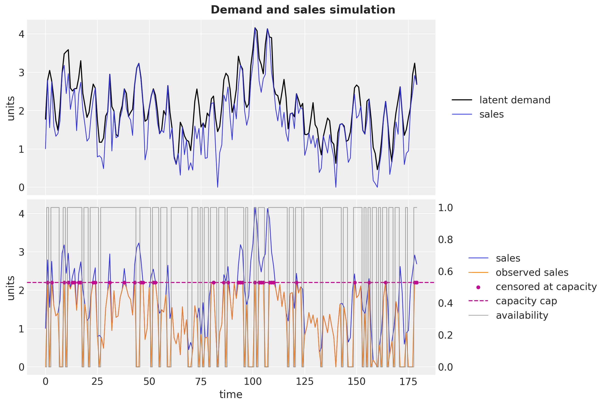
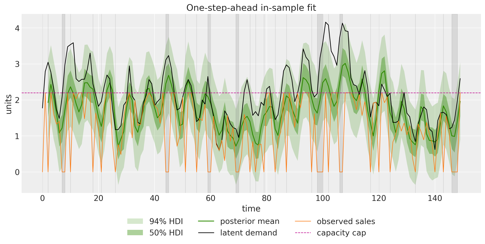
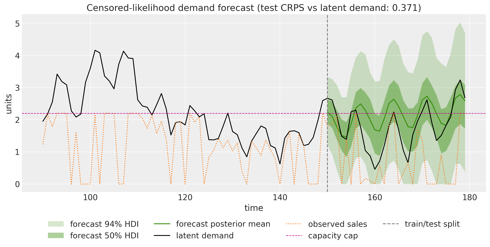
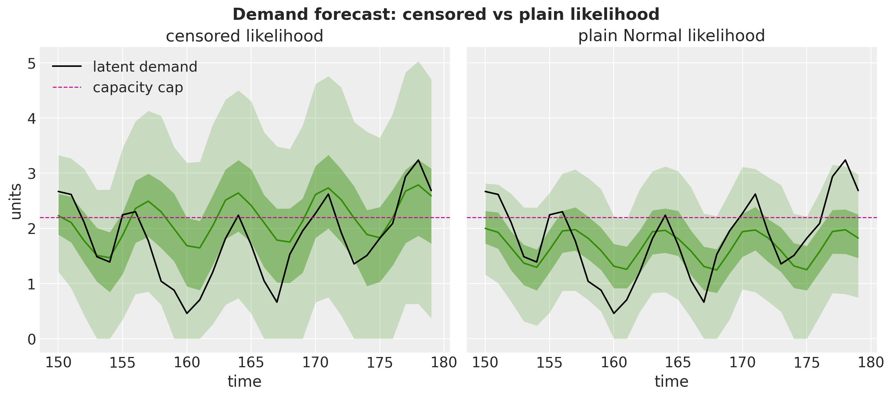

from dataclasses import dataclass
from functools import partial
from typing import NamedTuple
import arviz as az
import jax
import jax.numpy as jnp
import matplotlib.pyplot as plt
import numpy as np
import numpyro
import numpyro.distributions as dist
import pandas as pd
import xarray as xr
from jax import random
from jaxtyping import Float
from matplotlib.artist import Artist
from matplotlib.axes import Axes
from numpyro.infer import MCMC, NUTS
from numpyro_forecast import (
Horizon,
eval_coverage,
eval_crps,
eval_mae,
eval_rmse,
evaluate_forecast,
predictions_to_datatree,
ssoe,
to_datatree,
)
from numpyro_forecast.arrays import pad_future
from numpyro_forecast.features import fourier_features
from numpyro_forecast.typing import Array, ForecastModel
az.style.use("arviz-darkgrid")
plt.rcParams["figure.figsize"] = [10, 6]
plt.rcParams["figure.dpi"] = 100
plt.rcParams["figure.facecolor"] = "white"
numpyro.set_host_device_count(n=4)
rng_key = random.PRNGKey(seed=42)
%load_ext autoreload
%autoreload 2
%load_ext jaxtyping
%jaxtyping.typechecker beartype.beartype
%config InlineBackend.figure_format = "retina"Demand Forecasting with Censored Likelihood
Demand forecasting when observed sales are censored by stockouts and a capacity cap. An AR(2) model with weekly seasonality whose likelihood mixes the Normal density below the cap with the survival mass at it, fit with NUTS and compared against a naive Normal model on recovering true demand.
Demand Forecasting with Censored Likelihood with numpyro_forecast
This notebook ports the blog post Demand Forecasting with Censored Likelihood to the numpyro_forecast package. The subject is a fact of retail life: recorded sales understate demand in two distinct ways. When the product is out of stock, a day of genuine demand is recorded as zero sales. And when demand exceeds what the shelf (or the supply) can carry, the register stops counting at the capacity cap, so the recorded number is a lower bound on what customers actually wanted. A model trained naively on such a series learns to forecast sales, but replenishment and capacity planning need a forecast of demand: order against sales and you bake yesterday’s stockouts into tomorrow’s assortment, systematically under-serving your best days.
We simulate a demand series from an AR(2) process with weekly seasonality, corrupt it into observed sales through random stockouts and a hard capacity cap, and then fit an AR(2) model with Fourier seasonality whose likelihood knows about the censoring: below the cap an observation contributes the usual \text{Normal} density, and at the cap it contributes the survival mass P(\text{demand} \geq \text{cap}), the probability that latent demand was at least as large as the recorded bound. Days with the product off the shelf are masked out of the likelihood entirely. Because the data are simulated, the true demand is known and the claim “the censored likelihood recovers demand” can be checked against ground truth rather than asserted.
This example completes a trio of availability mechanisms in this documentation. The availability TSB example freezes its recursion updates when the product is off the shelf, and the fresh retail stockout example scales the mean by a saturating availability factor; its next-steps list asks for precisely the model built here. The closing section compares the three mechanisms side by side.
Prepare notebook
Generate data
We reproduce the blog post’s data generating process. Latent demand follows an AR(2) recursion with a weekly sinusoid, clipped at zero:
d_t = \max\left(0, \; \phi_1 \, d_{t-1} + \phi_2 \, d_{t-2} + \gamma \sin\left(\frac{2\pi t}{7}\right) + \alpha + \varepsilon^d_t\right), \qquad \varepsilon^d_t \sim \text{Normal}(0, \sigma_d).
Sales are demand minus a friction term and noise, never exceeding demand and never negative:
s_t = \max\left(0, \; \min\left(d_t + \varepsilon^s_t - \delta, \; d_t\right)\right), \qquad \varepsilon^s_t \sim \text{Normal}(0, \sigma_s).
Observed sales gate the sales through an availability coin flip and cap them at the shelf capacity:
a_t \sim \text{Bernoulli}(0.8), \qquad y_t = \min\left(a_t \, s_t, \; y_{\max}\right), \qquad y_{\max} = 2.2.
It pays to keep the four quantities straight, because the whole example is about the gaps between them:
- Latent demand d_t is what customers want on day t. It is never observed directly, and it is the number planning cares about.
- Sales s_t are what would sell with the product fully available: demand minus real-world friction (a customer walks away, a basket is abandoned), which is why s_t \leq d_t always.
- Observed sales y_t are the only column a transaction database records: sales zeroed out on stockout days and truncated at the capacity cap.
- Availability a_t says whether the product was on the shelf at all. Retail systems typically know this (or can reconstruct it from inventory snapshots), which is what makes the model below feasible in practice.
From the observed series we also derive the censoring indicator c_t = \mathbb{1}\{y_t = y_{\max}\}: on those days the register hit the cap, so the recorded value is a lower bound on sales rather than a measurement of them. Production data would flag y_t \geq y_{\max} instead; the exact equality is safe here only because the simulation’s minimum returns the cap bit-exactly.
@dataclass(frozen=True)
class DemandParams:
"""Parameters of the demand and sales data generating process.
Attributes
----------
n_periods
Number of days to simulate.
phi_1, phi_2
AR(2) coefficients of the latent demand recursion.
seasonal_amplitude
Amplitude of the weekly sinusoid in the demand recursion.
seasonal_period
Seasonal period in days.
intercept
Constant term of the demand recursion.
demand_init
Initial demand level seeding both lags of the recursion.
demand_noise, sales_noise
Standard deviations of the demand and sales noise terms.
demand_sales_delta
Friction subtracted from demand when generating sales.
availability_rate
Probability that the product is on the shelf on a given day.
max_capacity
Hard cap on recorded daily sales.
"""
n_periods: int = 180
phi_1: float = 0.6
phi_2: float = 0.3
seasonal_amplitude: float = 0.6
seasonal_period: int = 7
intercept: float = 0.2
demand_init: float = 2.0
demand_noise: float = 0.3
sales_noise: float = 0.5
demand_sales_delta: float = 0.25
availability_rate: float = 0.8
max_capacity: float = 2.2
class DemandData(NamedTuple):
"""Simulated series of the demand and sales process.
Attributes
----------
demand
Latent demand series.
sales
Sales under full availability.
sales_obs
Observed sales: availability-gated and capacity-capped.
is_available
Availability indicator (1 if the product was on the shelf).
"""
demand: Float[Array, " t"]
sales: Float[Array, " t"]
sales_obs: Float[Array, " t"]
is_available: Float[Array, " t"]
def generate_demand_sales(rng_key: Array, params: DemandParams) -> DemandData:
"""Simulate latent demand, sales, and observed sales.
Parameters
----------
rng_key
PRNG key for the noise terms and the availability draws.
params
Parameters of the data generating process.
Returns
-------
DemandData
The four simulated series, each of length ``params.n_periods``.
"""
key_demand, key_sales, key_avail = random.split(rng_key, 3)
noise_demand = params.demand_noise * random.normal(key_demand, (params.n_periods,))
noise_sales = params.sales_noise * random.normal(key_sales, (params.n_periods,))
is_available = random.bernoulli(
key_avail, params.availability_rate, (params.n_periods,)
).astype(jnp.float32)
t_grid = jnp.arange(params.n_periods, dtype=jnp.float32)
def dgp_step(carry, xs):
demand_prev_1, demand_prev_2 = carry
t, eps_demand, eps_sales = xs
seasonal = params.seasonal_amplitude * jnp.sin(2 * jnp.pi * t / params.seasonal_period)
demand_t = jnp.clip(
params.phi_1 * demand_prev_1
+ params.phi_2 * demand_prev_2
+ seasonal
+ params.intercept
+ eps_demand,
min=0.0,
)
sales_t = jnp.clip(
jnp.minimum(demand_t + eps_sales - params.demand_sales_delta, demand_t),
min=0.0,
)
return (demand_t, demand_prev_1), (demand_t, sales_t)
init = (jnp.asarray(params.demand_init), jnp.asarray(params.demand_init))
_, (demand, sales) = jax.lax.scan(dgp_step, init, (t_grid, noise_demand, noise_sales))
sales_obs = jnp.minimum(is_available * sales, params.max_capacity)
return DemandData(demand=demand, sales=sales, sales_obs=sales_obs, is_available=is_available)
params = DemandParams()
rng_key, rng_subkey = random.split(rng_key)
demand, sales, sales_obs, is_available = generate_demand_sales(rng_subkey, params)
censored = (sales_obs == params.max_capacity).astype(jnp.float32)
time = np.arange(params.n_periods)
n_stockout = int((1 - is_available).sum())
n_censored = int(censored.sum())
print(f"periods: {params.n_periods}")
print(f"stockout days: {n_stockout} ({n_stockout / params.n_periods:.0%})")
print(f"capacity-censored days: {n_censored} ({n_censored / params.n_periods:.0%})")periods: 180
stockout days: 49 (27%)
capacity-censored days: 36 (20%)The plot splits the story into its two steps. The top panel is the market: latent demand (black) with sales (blue) hugging it from below by the friction term. The bottom panel is the database: observed sales (orange) collapse to zero wherever the gray availability line (right axis) drops off the shelf, and flatline at the dashed capacity cap wherever sales would have exceeded it, with the censored days marked.
fig, (ax_top, ax_bot) = plt.subplots(
nrows=2, ncols=1, sharex=True, sharey=True, figsize=(12, 8), layout="constrained"
)
ax_top.plot(time, np.asarray(demand), color="black", lw=1.5, label="latent demand")
ax_top.plot(time, np.asarray(sales), color="C0", lw=1, label="sales")
ax_top.legend(loc="center left", bbox_to_anchor=(1.02, 0.5))
ax_top.set(ylabel="units")
ax_bot.plot(time, np.asarray(sales), color="C0", lw=1, label="sales")
ax_bot.plot(time, np.asarray(sales_obs), color="C1", lw=1, label="observed sales")
ax_bot.scatter(
time[np.asarray(censored) == 1],
np.asarray(sales_obs)[np.asarray(censored) == 1],
color="C3",
s=20,
zorder=5,
label="censored at capacity",
)
ax_bot.axhline(params.max_capacity, color="C3", ls="--", lw=1.5, label="capacity cap")
ax_twin = ax_bot.twinx()
ax_twin.plot(
time,
np.asarray(is_available),
color="gray",
lw=1,
alpha=0.7,
drawstyle="steps-mid",
label="availability",
)
ax_twin.grid(False)
bot_handles, bot_labels = ax_bot.get_legend_handles_labels()
twin_handles, twin_labels = ax_twin.get_legend_handles_labels()
ax_bot.legend(
bot_handles + twin_handles,
bot_labels + twin_labels,
loc="center left",
bbox_to_anchor=(1.06, 0.5),
)
ax_bot.set(xlabel="time", ylabel="units")
fig.suptitle("Demand and sales simulation", fontsize=16, fontweight="bold");
Train-test split and covariates
We hold out the last 30 days as the test window. Throughout the package, time lives at axis -2 and the observation dimension at axis -1, so the training data has shape (150, 1).
The covariates carry everything the model needs over the full duration, in a (180, 7) tensor. The package infers the forecast horizon from the shapes: covariates longer than the data by 30 rows means a 30-step forecast.
- Column
0is the observed sales history the AR recursion filters. The history has to travel through the covariates rather than the data argument: the package’s predict_in_sample and to_datatree call the model withdata=None(they sample the observation site), while the recursion always needs the observed series. Only the firstt_obsrows are ever read (the ssoe building block below checks this), so the future rows are zeroed out and no information leaks. - Column
1is the availability mask and column2the censoring indicator, read only over the training rows. One honest caveat versus the availability TSB and fresh retail examples, whose recursions consume these inputs over the horizon too: here the model pads its own horizon inputs (availability one, censoring zero), so the forecast is structurally uncensored demand-scale sales, the number a planner should order against, regardless of what the trailing rows contain. We still pin the trailing 30 rows to the same values so the scenario travels with the forecast into the tree’spredictions_constant_data, as documentation rather than as a model input. - Columns
3:7are weekly Fourier features (two harmonics, sines then cosines) from the package’sfourier_featureshelper, the only columns the model reads over the horizon.
forecast_horizon = 30
n_train = params.n_periods - forecast_horizon
train_data = sales_obs[:n_train][:, None]
demand_test = demand[n_train:][:, None]
sales_obs_test = sales_obs[n_train:][:, None]
t_test = time[n_train:]
n_order = 2
fourier = fourier_features(params.n_periods, float(params.seasonal_period), n_order)
in_train = jnp.arange(params.n_periods) < n_train
covariates = jnp.concatenate(
[
jnp.where(in_train, sales_obs, 0.0)[:, None], # history; future rows never read
jnp.where(in_train, is_available, 1.0)[:, None], # scenario: fully available
jnp.where(in_train, censored, 0.0)[:, None], # scenario: uncensored
fourier,
],
axis=-1,
)
covariates_train = covariates[:n_train]
print(f"train data shape: {train_data.shape}, full covariates shape: {covariates.shape}")train data shape: (150, 1), full covariates shape: (180, 7)Model specification
The mean recursion is an AR(2) on filtered lags \tilde{y}_t (defined below) plus a Fourier seasonal term:
\hat{y}_t = \mu + \phi_1 \, \tilde{y}_{t-1} + \phi_2 \, \tilde{y}_{t-2} + \mathbf{f}_t^\top \boldsymbol{\beta},
with priors
\begin{align*} \mu & \sim \text{Normal}(1, 1), \\ \phi_1, \phi_2 & \sim \text{Normal}(0, 1), \\ \boldsymbol{\beta} & \sim \text{Normal}(0, 1), \\ \sigma & \sim \text{HalfNormal}(1). \end{align*}
The likelihood is where the censoring lives. An uncensored day contributes the usual density; a censored day only tells us that latent sales were at least the cap, so it contributes the survival mass above the recorded value:
p(y_t \mid \hat{y}_t, \sigma) = \text{Normal}(y_t \mid \hat{y}_t, \sigma)^{1 - c_t} \left[1 - \Phi\left(\frac{y_t - \hat{y}_t}{\sigma}\right)\right]^{c_t},
where \Phi is the standard \text{Normal} CDF, and the whole term is masked out on stockout days (a_t = 0), which carry no demand information. NumPyro ships this construction (from version 0.20.0) as RightCensoredDistribution: its log_prob is exactly the expression above (with a numerical-stability clip on the CDF), and its sample draws from the uncensored base distribution, which is precisely what we want posterior predictive draws to describe. The whole likelihood is then a single vectorized "obs" site.
Filtering through the gaps. Masking the likelihood is only half the treatment of a corrupted day, because an autoregression also consumes every day as a lagged value. A recorded stockout zero fed into the carry masquerades as a demand crash: it drags the next day’s prediction down, attenuates the AR coefficients (post-gap days look like violent rebounds no moderate \phi can explain), and inflates \sigma to absorb the damage. The recursion therefore carries a filtered series instead of the raw observations:
\tilde{y}_t = a_t \left[(1 - c_t) \, y_t + c_t \max\left(y_t, \hat{y}_t\right)\right] + (1 - a_t) \, \hat{y}_t.
Clean on-shelf days pass the observation through; capped days floor the lag at the model’s own prediction, since the truth is at least the cap; off-shelf days carry the prediction itself, the model’s best estimate of the demand nobody could express. This is the same one-step-ahead logic a state space filter applies to missing observations, done with a plug-in mean instead of a full state distribution.
The model is a plain NumPyro function (covariates, data=None) that derives its train/forecast split from the shapes with Horizon.from_data and hands the recursion to the ssoe building block, the single-source-of-error recursion shared with the ARMA and exponential smoothing examples. ssoe takes the driving series, an initial carry, a step function, and the innovation distribution. step(carry, x_t) returns the one-step-ahead mean \hat{y}_t and a carry_fn(y_t, eps_t) that builds the next carry from the day’s value and its error; closing carry_fn over the prediction is what lets the lag filter above floor capped days at \hat{y}_t. Rows carry the observation axis, so the two placeholder lags are y[0] with shape (1,), the mean has shape (1,), and a scalar state would emit mu[None]; the block checks these shapes. The block owns two scans, neither containing a sample site:
- In sample. A deterministic
jax.lax.scanrunsstepover the observed history, feeding each observation and its error \varepsilon_t = y_t - \hat{y}_t throughcarry_fn, and returns the one-step-ahead means asr.mu(exposed as the deterministic site"pred_mean"); the"obs"site conditions the data on them through the censored likelihood. The AR(2) needs two lags, so the first two steps run on placeholder lags and are masked out of the likelihood. - Out of sample. When
h.future > 0the block draws the horizon innovations at the"eps_future"site (under its owntime_futureplate), rolls the recursion forward from the final filtered lags with each sampled value \hat{y}_t + \varepsilon_t fed back throughcarry_fn, and returns the trajectory asr.y_future, which we register (clipped at zero, since demand is nonnegative) as the deterministic"forecast"site the package reads. Since"eps_future"does not exist during training,Predictivedraws it from the prior at forecast time and the uncertainty compounds over the horizon exactly as the generative process says it should. The availability and censoring inputs are padded over the horizon withpad_future(available, uncensored), so no gate or cap applies there: the forecast is of latent demand-scale sales, unconstrained by the cap.
One small difference from the blog post’s hand-rolled scans: the same carry_fn serves both scans, so the clip at zero now applies to the filtered lag in sample as well, which only matters on stockout days whose prediction is negative.
def ar2_seasonal(covariates: Array, data: Array | None = None) -> None:
"""Censored AR(2) model with weekly Fourier seasonality.
Parameters
----------
covariates
Seven-input tensor ``(duration, 7)`` spanning the full horizon: column
``0`` is the observed sales history (only the first ``h.t_obs`` rows
are read), column ``1`` the availability mask, column ``2`` the
censoring indicator, and columns ``3:7`` the weekly Fourier features
(the only columns read over the forecast horizon).
data
Observed sales with time at axis ``-2``, or ``None`` when the drivers
sample the observation site.
"""
h = Horizon.from_data(covariates, data)
y = covariates[..., : h.t_obs, 0:1] # observed history only; never reads beyond t_obs
available = covariates[..., : h.t_obs, 1:2]
censored = covariates[..., : h.t_obs, 2:3]
fourier = covariates[..., 3:]
mu = numpyro.sample("mu", dist.Normal(loc=1, scale=1))
phi_1 = numpyro.sample("phi_1", dist.Normal(loc=0, scale=1))
phi_2 = numpyro.sample("phi_2", dist.Normal(loc=0, scale=1))
sigma = numpyro.sample("sigma", dist.HalfNormal(scale=1))
with numpyro.plate("fourier_modes", fourier.shape[-1]):
# jnp.asarray only narrows numpyro's union return type for the type checker.
beta_seasonal = jnp.asarray(numpyro.sample("beta_seasonal", dist.Normal(loc=0, scale=1)))
seasonal = (fourier @ beta_seasonal)[..., None]
def step(carry, x_t):
seasonal_t, available_t, censored_t = x_t
lag_1, lag_2 = carry
pred = mu + phi_1 * lag_1 + phi_2 * lag_2 + seasonal_t
def carry_fn(y_t, _):
# The filtered lag: pass clean observations through, floor capped days at the
# prediction, and substitute the prediction on stockout days.
on_shelf = jnp.where(censored_t == 1, jnp.maximum(y_t, pred), y_t)
y_filtered = jnp.where(available_t == 1, on_shelf, pred)
return jnp.clip(y_filtered, min=0.0), lag_1
return pred, carry_fn
# Over the horizon the product is available and uncensored: no gate, no cap.
xs = (seasonal, pad_future(available, h.future, value=1.0), pad_future(censored, h.future))
init_carry = (y[0], y[0]) # placeholder lags; the first two steps are masked below
r = ssoe(h, "eps", y, init_carry, step, dist.Normal(loc=0, scale=sigma), xs=xs)
pred_mean = numpyro.deterministic("pred_mean", r.mu)
valid = (jnp.arange(h.t_obs)[:, None] >= 2) & (available == 1)
numpyro.sample(
"obs",
dist.RightCensoredDistribution(
dist.Normal(loc=pred_mean, scale=sigma), censored=censored
).mask(valid),
obs=h.data,
)
if h.future > 0:
numpyro.deterministic("forecast", jnp.clip(r.y_future, min=0.0))Inference with NUTS
We fit the model on the training window with plain NumPyro: the No-U-Turn Sampler through MCMC, running 4 chains of 1{,}000 warmup and 1{,}000 sampling steps each with target_accept_prob=0.9 (the survival term gives the likelihood a slightly harder geometry near the cap). A modest budget is plenty because the posterior is tiny: the in-sample filter is deterministic, so the only latents are the eight parameters (\mu, \phi_1, \phi_2, \sigma, and four Fourier coefficients). The small fit_nuts helper wraps the call so the naive baseline below fits with exactly the same settings.
We then export the posterior draws into an ArviZ-schema xarray.DataTree with to_datatree, which restores the (chain, draw) structure (we pass num_chains=4) and samples the in-sample posterior predictive from the same draws. Because we pass the extended covariates, the tree automatically carries predictions groups with the out-of-sample draws of the "forecast" site, and the trailing scenario rows of the covariates land verbatim in predictions_constant_data, so the tree documents that this forecast describes a full-availability, uncensored scenario.
def fit_nuts(
rng_key: Array, model: ForecastModel, data: Array, covariates: Array
) -> dict[str, Array]:
"""Fit ``model`` with NUTS at ``target_accept_prob=0.9`` (4 chains, 1,000 warmup and 1,000 draws each)."""
mcmc = MCMC(
NUTS(model, target_accept_prob=0.9),
num_warmup=1_000,
num_samples=1_000,
num_chains=4,
chain_method="sequential",
progress_bar=False,
)
mcmc.run(rng_key, covariates, data)
return mcmc.get_samples()
rng_key, rng_subkey = random.split(rng_key)
posterior = fit_nuts(rng_subkey, ar2_seasonal, train_data, covariates_train)
rng_key, rng_subkey = random.split(rng_key)
tree = to_datatree(
rng_subkey,
ar2_seasonal,
posterior,
train_data,
covariates,
num_chains=4,
posterior_dims={"pred_mean": ["time", "obs_dim"]},
)
tree<xarray.DataTree>
Group: /
│ Attributes:
│ inference_library: numpyro
│ creation_library: numpyro_forecast
│ sample_dims: ['chain', 'draw']
├── Group: /posterior
│ Dimensions: (chain: 4, draw: 1000, beta_seasonal_dim_0: 4,
│ time: 150, obs_dim: 1)
│ Coordinates:
│ * chain (chain) int64 32B 0 1 2 3
│ * draw (draw) int64 8kB 0 1 2 3 4 5 ... 995 996 997 998 999
│ * beta_seasonal_dim_0 (beta_seasonal_dim_0) int64 32B 0 1 2 3
│ * time (time) int64 1kB 0 1 2 3 4 5 ... 145 146 147 148 149
│ * obs_dim (obs_dim) int64 8B 0
│ Data variables:
│ beta_seasonal (chain, draw, beta_seasonal_dim_0) float32 64kB 0.58...
│ mu (chain, draw) float32 16kB 0.3005 0.1796 ... 0.5165
│ phi_1 (chain, draw) float32 16kB 0.4918 0.5269 ... 0.55
│ phi_2 (chain, draw) float32 16kB 0.3845 0.4196 ... 0.2187
│ pred_mean (chain, draw, time, obs_dim) float32 2MB 0.04996 ......
│ sigma (chain, draw) float32 16kB 0.4969 0.521 ... 0.5858
│ Attributes:
│ created_at: 2026-08-27T12:29:31.496876+00:00
│ creation_library: ArviZ
│ creation_library_version: 1.2.0
│ creation_library_language: Python
│ sample_dims: ['chain', 'draw']
├── Group: /posterior_predictive
│ Dimensions: (chain: 4, draw: 1000, time: 150, obs_dim: 1)
│ Coordinates:
│ * chain (chain) int64 32B 0 1 2 3
│ * draw (draw) int64 8kB 0 1 2 3 4 5 6 7 ... 993 994 995 996 997 998 999
│ * time (time) int64 1kB 0 1 2 3 4 5 6 7 ... 143 144 145 146 147 148 149
│ * obs_dim (obs_dim) int64 8B 0
│ Data variables:
│ obs (chain, draw, time, obs_dim) float32 2MB -0.5638 0.9075 ... 2.377
│ Attributes:
│ created_at: 2026-08-27T12:29:31.670375+00:00
│ creation_library: ArviZ
│ creation_library_version: 1.2.0
│ creation_library_language: Python
│ sample_dims: ['chain', 'draw']
├── Group: /observed_data
│ Dimensions: (time: 150, obs_dim: 1)
│ Coordinates:
│ * time (time) int64 1kB 0 1 2 3 4 5 6 7 ... 143 144 145 146 147 148 149
│ * obs_dim (obs_dim) int64 8B 0
│ Data variables:
│ obs (time, obs_dim) float32 600B 0.0 2.2 0.0 2.2 ... 0.0 0.0 0.0 2.2
│ Attributes:
│ created_at: 2026-08-27T12:29:31.670670+00:00
│ creation_library: ArviZ
│ creation_library_version: 1.2.0
│ creation_library_language: Python
│ sample_dims: []
├── Group: /constant_data
│ Dimensions: (time: 150, covariate_dim: 7)
│ Coordinates:
│ * time (time) int64 1kB 0 1 2 3 4 5 6 ... 144 145 146 147 148 149
│ * covariate_dim (covariate_dim) int64 56B 0 1 2 3 4 5 6
│ Data variables:
│ covariates (time, covariate_dim) float32 4kB 0.0 0.0 ... -0.2225 -0.901
│ Attributes:
│ created_at: 2026-08-27T12:29:31.670875+00:00
│ creation_library: ArviZ
│ creation_library_version: 1.2.0
│ creation_library_language: Python
│ sample_dims: []
├── Group: /predictions
│ Dimensions: (chain: 4, draw: 1000, time: 30, obs_dim: 1)
│ Coordinates:
│ * chain (chain) int64 32B 0 1 2 3
│ * draw (draw) int64 8kB 0 1 2 3 4 5 6 7 ... 993 994 995 996 997 998 999
│ * time (time) int64 240B 150 151 152 153 154 155 ... 175 176 177 178 179
│ * obs_dim (obs_dim) int64 8B 0
│ Data variables:
│ obs (chain, draw, time, obs_dim) float32 480kB 2.964 1.631 ... 3.133
│ Attributes:
│ created_at: 2026-08-27T12:29:31.888683+00:00
│ creation_library: ArviZ
│ creation_library_version: 1.2.0
│ creation_library_language: Python
│ sample_dims: ['chain', 'draw']
└── Group: /predictions_constant_data
Dimensions: (time: 30, covariate_dim: 7)
Coordinates:
* time (time) int64 240B 150 151 152 153 154 ... 175 176 177 178 179
* covariate_dim (covariate_dim) int64 56B 0 1 2 3 4 5 6
Data variables:
covariates (time, covariate_dim) float32 840B 0.0 1.0 ... -0.901 0.6235
Attributes:
created_at: 2026-08-27T12:29:31.888968+00:00
creation_library: ArviZ
creation_library_version: 1.2.0
creation_library_language: Python
sample_dims: []xarray.DataTree
- chain: 4
- draw: 1000
- beta_seasonal_dim_0: 4
- time: 150
- obs_dim: 1
- chain(chain)int640 1 2 3
array([0, 1, 2, 3])
- draw(draw)int640 1 2 3 4 5 ... 995 996 997 998 999
array([ 0, 1, 2, ..., 997, 998, 999], shape=(1000,))
- beta_seasonal_dim_0(beta_seasonal_dim_0)int640 1 2 3
array([0, 1, 2, 3])
- time(time)int640 1 2 3 4 5 ... 145 146 147 148 149
array([ 0, 1, 2, 3, 4, 5, 6, 7, 8, 9, 10, 11, 12, 13,14, 15, 16, 17, 18, 19, 20, 21, 22, 23, 24, 25, 26, 27,28, 29, 30, 31, 32, 33, 34, 35, 36, 37, 38, 39, 40, 41,42, 43, 44, 45, 46, 47, 48, 49, 50, 51, 52, 53, 54, 55,56, 57, 58, 59, 60, 61, 62, 63, 64, 65, 66, 67, 68, 69,70, 71, 72, 73, 74, 75, 76, 77, 78, 79, 80, 81, 82, 83,84, 85, 86, 87, 88, 89, 90, 91, 92, 93, 94, 95, 96, 97,98, 99, 100, 101, 102, 103, 104, 105, 106, 107, 108, 109, 110, 111,112, 113, 114, 115, 116, 117, 118, 119, 120, 121, 122, 123, 124, 125,126, 127, 128, 129, 130, 131, 132, 133, 134, 135, 136, 137, 138, 139,140, 141, 142, 143, 144, 145, 146, 147, 148, 149])
- obs_dim(obs_dim)int640
array([0])
- beta_seasonal(chain, draw, beta_seasonal_dim_0)float320.5878 -0.1143 ... -0.2805 -0.0281
array([[[ 0.5877775 , -0.1143292 , -0.04959118, -0.20096998],[ 0.5172468 , 0.0164526 , -0.11988105, -0.15640548],[ 0.533765 , -0.02726647, -0.04149077, -0.05606794],...,[ 0.60432607, 0.10783991, -0.1643648 , -0.20965652],[ 0.4257433 , -0.06949724, -0.17280164, 0.01156274],[ 0.62580293, -0.0176768 , -0.08620638, -0.16691032]],[[ 0.5532976 , 0.02557152, -0.15372463, -0.13737015],[ 0.38739598, 0.02509622, -0.10607919, -0.05265014],[ 0.56311333, -0.00498741, -0.12259886, -0.08252534],...,[ 0.5063434 , -0.02951515, -0.22261068, 0.00641944],[ 0.4848208 , -0.00070125, -0.13820937, -0.12730493],[ 0.5439957 , -0.02986783, -0.12937737, -0.06744491]],[[ 0.4686972 , 0.03307745, -0.23404755, -0.2114593 ],[ 0.5240969 , -0.09298711, -0.18993509, 0.08681404],[ 0.53218395, -0.10823598, -0.19317123, 0.09210631],...,[ 0.48143065, 0.09987203, -0.24147166, -0.04674615],[ 0.5635341 , -0.11461761, -0.13289775, -0.13683403],[ 0.5428524 , -0.07295474, -0.16645983, -0.2004323 ]],[[ 0.41759187, 0.03075888, -0.19506693, 0.05755039],[ 0.6037597 , 0.056598 , -0.2548871 , -0.04732277],[ 0.49468625, 0.04638384, -0.09064213, -0.1588028 ],...,[ 0.60427064, -0.00246303, -0.34020603, -0.21144538],[ 0.34428352, -0.0900771 , -0.1988242 , -0.06354729],[ 0.48445782, 0.09542131, -0.28054726, -0.02810108]]],shape=(4, 1000, 4), dtype=float32)
- mu(chain, draw)float320.3005 0.1796 ... 0.478 0.5165
array([[0.30051747, 0.1796015 , 0.0202827 , ..., 0.17196618, 0.37141296,0.23191845],[0.40631694, 0.22796667, 0.2429428 , ..., 0.3658261 , 0.23599382,0.23829997],[0.27432102, 0.27268335, 0.20438346, ..., 0.30810297, 0.25225592,0.13323534],[0.26475957, 0.09690974, 0.1847963 , ..., 0.47579208, 0.47802567,0.5164883 ]], shape=(4, 1000), dtype=float32)
- phi_1(chain, draw)float320.4918 0.5269 ... 0.2762 0.55
array([[0.49184254, 0.5269202 , 0.51713324, ..., 0.4730961 , 0.36441606,0.59565246],[0.62055737, 0.55409855, 0.64899373, ..., 0.22566238, 0.57679707,0.4060376 ],[0.48012358, 0.4428366 , 0.41411713, ..., 0.36856565, 0.5730042 ,0.59599334],[0.31955916, 0.42662713, 0.4804987 , ..., 0.3497478 , 0.27618262,0.5500004 ]], shape=(4, 1000), dtype=float32)
- phi_2(chain, draw)float320.3845 0.4196 ... 0.5093 0.2187
array([[0.38452867, 0.41959047, 0.5074362 , ..., 0.46251848, 0.45872128,0.32701215],[0.17345604, 0.36379325, 0.22898307, ..., 0.6111715 , 0.31326795,0.5039987 ],[0.40185478, 0.4369382 , 0.4940844 , ..., 0.5216075 , 0.33407688,0.36307395],[0.5461431 , 0.5334703 , 0.44491032, ..., 0.42683768, 0.5092842 ,0.21867183]], shape=(4, 1000), dtype=float32)
- pred_mean(chain, draw, time, obs_dim)float320.04996 0.687 2.217 ... 1.533 2.086
array([[[[ 0.04995632],[ 0.6869688 ],[ 2.2165298 ],...,[ 1.0758754 ],[ 1.6341335 ],[ 2.3327074 ]],[[-0.09668504],[ 0.5601003 ],[ 2.0035582 ],...,[ 0.932141 ],[ 1.4709679 ],[ 2.0105326 ]],[[-0.07727601],[ 0.3976214 ],[ 1.7499367 ],...,......,[ 0.75673014],[ 1.4385967 ],[ 2.1583366 ]],[[ 0.2156542 ],[ 0.6091144 ],[ 1.6716881 ],...,[ 1.1857035 ],[ 1.5427574 ],[ 1.9842018 ]],[[ 0.20783997],[ 0.9339284 ],[ 2.2905936 ],...,[ 0.94948137],[ 1.5327313 ],[ 2.0857713 ]]]], shape=(4, 1000, 150, 1), dtype=float32)
- sigma(chain, draw)float320.4969 0.521 ... 0.4687 0.5858
array([[0.49685836, 0.5209827 , 0.4714759 , ..., 0.549867 , 0.48994067,0.6115085 ],[0.57605654, 0.5067748 , 0.5240017 , ..., 0.57335997, 0.49524623,0.5516442 ],[0.47463617, 0.57408786, 0.5835301 , ..., 0.5435066 , 0.52834415,0.49740773],[0.52205014, 0.50877076, 0.48977005, ..., 0.5916976 , 0.4687183 ,0.58578 ]], shape=(4, 1000), dtype=float32)
- created_at :
- 2026-08-27T12:29:31.496876+00:00
- creation_library :
- ArviZ
- creation_library_version :
- 1.2.0
- creation_library_language :
- Python
- sample_dims :
- ['chain', 'draw']
- chain: 4
- draw: 1000
- time: 150
- obs_dim: 1
- chain(chain)int640 1 2 3
array([0, 1, 2, 3])
- draw(draw)int640 1 2 3 4 5 ... 995 996 997 998 999
array([ 0, 1, 2, ..., 997, 998, 999], shape=(1000,))
- time(time)int640 1 2 3 4 5 ... 145 146 147 148 149
array([ 0, 1, 2, 3, 4, 5, 6, 7, 8, 9, 10, 11, 12, 13,14, 15, 16, 17, 18, 19, 20, 21, 22, 23, 24, 25, 26, 27,28, 29, 30, 31, 32, 33, 34, 35, 36, 37, 38, 39, 40, 41,42, 43, 44, 45, 46, 47, 48, 49, 50, 51, 52, 53, 54, 55,56, 57, 58, 59, 60, 61, 62, 63, 64, 65, 66, 67, 68, 69,70, 71, 72, 73, 74, 75, 76, 77, 78, 79, 80, 81, 82, 83,84, 85, 86, 87, 88, 89, 90, 91, 92, 93, 94, 95, 96, 97,98, 99, 100, 101, 102, 103, 104, 105, 106, 107, 108, 109, 110, 111,112, 113, 114, 115, 116, 117, 118, 119, 120, 121, 122, 123, 124, 125,126, 127, 128, 129, 130, 131, 132, 133, 134, 135, 136, 137, 138, 139,140, 141, 142, 143, 144, 145, 146, 147, 148, 149])
- obs_dim(obs_dim)int640
array([0])
- obs(chain, draw, time, obs_dim)float32-0.5638 0.9075 ... 0.793 2.377
array([[[[-0.56384903],[ 0.90746117],[ 2.0982363 ],...,[ 1.1153297 ],[ 1.230031 ],[ 1.7082863 ]],[[-0.6324469 ],[ 0.9293224 ],[ 2.3211462 ],...,[ 1.6520592 ],[ 1.4729671 ],[ 1.4536469 ]],[[-0.11268602],[-0.04358211],[ 2.0833507 ],...,......,[-0.01989453],[ 1.5288619 ],[ 2.410868 ]],[[-0.5104706 ],[ 0.64572644],[ 2.4898117 ],...,[ 1.650604 ],[ 1.6519582 ],[ 1.9656909 ]],[[ 0.346522 ],[ 1.3817728 ],[ 2.1746557 ],...,[-0.02579677],[ 0.79298997],[ 2.3770835 ]]]], shape=(4, 1000, 150, 1), dtype=float32)
- created_at :
- 2026-08-27T12:29:31.670375+00:00
- creation_library :
- ArviZ
- creation_library_version :
- 1.2.0
- creation_library_language :
- Python
- sample_dims :
- ['chain', 'draw']
- time: 150
- obs_dim: 1
- time(time)int640 1 2 3 4 5 ... 145 146 147 148 149
array([ 0, 1, 2, 3, 4, 5, 6, 7, 8, 9, 10, 11, 12, 13,14, 15, 16, 17, 18, 19, 20, 21, 22, 23, 24, 25, 26, 27,28, 29, 30, 31, 32, 33, 34, 35, 36, 37, 38, 39, 40, 41,42, 43, 44, 45, 46, 47, 48, 49, 50, 51, 52, 53, 54, 55,56, 57, 58, 59, 60, 61, 62, 63, 64, 65, 66, 67, 68, 69,70, 71, 72, 73, 74, 75, 76, 77, 78, 79, 80, 81, 82, 83,84, 85, 86, 87, 88, 89, 90, 91, 92, 93, 94, 95, 96, 97,98, 99, 100, 101, 102, 103, 104, 105, 106, 107, 108, 109, 110, 111,112, 113, 114, 115, 116, 117, 118, 119, 120, 121, 122, 123, 124, 125,126, 127, 128, 129, 130, 131, 132, 133, 134, 135, 136, 137, 138, 139,140, 141, 142, 143, 144, 145, 146, 147, 148, 149])
- obs_dim(obs_dim)int640
array([0])
- obs(time, obs_dim)float320.0 2.2 0.0 2.2 ... 0.0 0.0 0.0 2.2
array([[0. ],[2.2 ],[0. ],[2.2 ],[1.5981454 ],[1.330448 ],[1.4032364 ],[0. ],[0. ],[2.2 ],[0. ],[2.2 ],[2.0323782 ],[2.2 ],[2.2 ],[1.4770805 ],[2.2 ],[2.2 ],[0. ],[1.6346474 ],...[1.0327187 ],[1.2768031 ],[0.38543403],[0. ],[1.3336072 ],[1.1269362 ],[0.89154816],[1.3728547 ],[1.0591812 ],[0.7849984 ],[0. ],[1.0683882 ],[1.6382626 ],[0. ],[1.5513194 ],[1.1958487 ],[0. ],[0. ],[0. ],[2.2 ]], dtype=float32)
- created_at :
- 2026-08-27T12:29:31.670670+00:00
- creation_library :
- ArviZ
- creation_library_version :
- 1.2.0
- creation_library_language :
- Python
- sample_dims :
- []
- time: 150
- covariate_dim: 7
- time(time)int640 1 2 3 4 5 ... 145 146 147 148 149
array([ 0, 1, 2, 3, 4, 5, 6, 7, 8, 9, 10, 11, 12, 13,14, 15, 16, 17, 18, 19, 20, 21, 22, 23, 24, 25, 26, 27,28, 29, 30, 31, 32, 33, 34, 35, 36, 37, 38, 39, 40, 41,42, 43, 44, 45, 46, 47, 48, 49, 50, 51, 52, 53, 54, 55,56, 57, 58, 59, 60, 61, 62, 63, 64, 65, 66, 67, 68, 69,70, 71, 72, 73, 74, 75, 76, 77, 78, 79, 80, 81, 82, 83,84, 85, 86, 87, 88, 89, 90, 91, 92, 93, 94, 95, 96, 97,98, 99, 100, 101, 102, 103, 104, 105, 106, 107, 108, 109, 110, 111,112, 113, 114, 115, 116, 117, 118, 119, 120, 121, 122, 123, 124, 125,126, 127, 128, 129, 130, 131, 132, 133, 134, 135, 136, 137, 138, 139,140, 141, 142, 143, 144, 145, 146, 147, 148, 149])
- covariate_dim(covariate_dim)int640 1 2 3 4 5 6
array([0, 1, 2, 3, 4, 5, 6])
- covariates(time, covariate_dim)float320.0 0.0 0.0 ... -0.2225 -0.901
array([[ 0.0000000e+00, 0.0000000e+00, 0.0000000e+00, ...,0.0000000e+00, 1.0000000e+00, 1.0000000e+00],[ 2.2000000e+00, 1.0000000e+00, 1.0000000e+00, ...,9.7492790e-01, 6.2348974e-01, -2.2252107e-01],[ 0.0000000e+00, 0.0000000e+00, 0.0000000e+00, ...,-4.3388399e-01, -2.2252107e-01, -9.0096873e-01],...,[ 0.0000000e+00, 0.0000000e+00, 0.0000000e+00, ...,1.5926582e-05, 1.0000000e+00, 1.0000000e+00],[ 0.0000000e+00, 0.0000000e+00, 0.0000000e+00, ...,9.7492421e-01, 6.2348330e-01, -2.2253717e-01],[ 2.2000000e+00, 1.0000000e+00, 1.0000000e+00, ...,-4.3389940e-01, -2.2252941e-01, -9.0096134e-01]],shape=(150, 7), dtype=float32)
- created_at :
- 2026-08-27T12:29:31.670875+00:00
- creation_library :
- ArviZ
- creation_library_version :
- 1.2.0
- creation_library_language :
- Python
- sample_dims :
- []
- chain: 4
- draw: 1000
- time: 30
- obs_dim: 1
- chain(chain)int640 1 2 3
array([0, 1, 2, 3])
- draw(draw)int640 1 2 3 4 5 ... 995 996 997 998 999
array([ 0, 1, 2, ..., 997, 998, 999], shape=(1000,))
- time(time)int64150 151 152 153 ... 176 177 178 179
array([150, 151, 152, 153, 154, 155, 156, 157, 158, 159, 160, 161, 162, 163,164, 165, 166, 167, 168, 169, 170, 171, 172, 173, 174, 175, 176, 177,178, 179])
- obs_dim(obs_dim)int640
array([0])
- obs(chain, draw, time, obs_dim)float322.964 1.631 0.7798 ... 3.035 3.133
array([[[[2.9638138e+00],[1.6306732e+00],[7.7976346e-01],...,[2.7350135e+00],[2.6988101e+00],[2.6338310e+00]],[[1.2485070e+00],[1.2938356e+00],[1.5419497e+00],...,[6.5825272e-01],[1.8479526e-01],[1.2264848e-03]],[[1.7008276e+00],[1.6336308e+00],[8.1614351e-01],...,......,[2.9813080e+00],[2.2399497e+00],[1.8494477e+00]],[[2.4832451e+00],[2.7439547e+00],[1.8713605e+00],...,[1.7120955e+00],[2.6574101e+00],[3.0433273e+00]],[[2.5016246e+00],[2.8594217e+00],[2.2477312e+00],...,[1.9697182e+00],[3.0351925e+00],[3.1333187e+00]]]], shape=(4, 1000, 30, 1), dtype=float32)
- created_at :
- 2026-08-27T12:29:31.888683+00:00
- creation_library :
- ArviZ
- creation_library_version :
- 1.2.0
- creation_library_language :
- Python
- sample_dims :
- ['chain', 'draw']
- time: 30
- covariate_dim: 7
- time(time)int64150 151 152 153 ... 176 177 178 179
array([150, 151, 152, 153, 154, 155, 156, 157, 158, 159, 160, 161, 162, 163,164, 165, 166, 167, 168, 169, 170, 171, 172, 173, 174, 175, 176, 177,178, 179])
- covariate_dim(covariate_dim)int640 1 2 3 4 5 6
array([0, 1, 2, 3, 4, 5, 6])
- covariates(time, covariate_dim)float320.0 1.0 0.0 ... -0.901 0.6235
array([[ 0.0000000e+00, 1.0000000e+00, 0.0000000e+00, 4.3387559e-01,-7.8182018e-01, -9.0097278e-01, 6.2350398e-01],[ 0.0000000e+00, 1.0000000e+00, 0.0000000e+00, -4.3389225e-01,7.8184325e-01, -9.0096480e-01, 6.2347507e-01],[ 0.0000000e+00, 1.0000000e+00, 0.0000000e+00, -9.7493011e-01,4.3386611e-01, -2.2251140e-01, -9.0097737e-01],[ 0.0000000e+00, 1.0000000e+00, 0.0000000e+00, -7.8182513e-01,-9.7493243e-01, 6.2349772e-01, -2.2250113e-01],[ 0.0000000e+00, 1.0000000e+00, 0.0000000e+00, 1.0522323e-05,2.1044645e-05, 1.0000000e+00, 1.0000000e+00],[ 0.0000000e+00, 1.0000000e+00, 0.0000000e+00, 7.8183824e-01,9.7492307e-01, 6.2348127e-01, -2.2254217e-01],[ 0.0000000e+00, 1.0000000e+00, 0.0000000e+00, 9.7492540e-01,-4.3390402e-01, -2.2253190e-01, -9.0095907e-01],[ 0.0000000e+00, 1.0000000e+00, 0.0000000e+00, 4.3387327e-01,-7.8181696e-01, -9.0097392e-01, 6.2350798e-01],[ 0.0000000e+00, 1.0000000e+00, 0.0000000e+00, -4.3389454e-01,7.8184640e-01, -9.0096366e-01, 6.2347108e-01],[ 0.0000000e+00, 1.0000000e+00, 0.0000000e+00, -9.7493064e-01,4.3386149e-01, -2.2250889e-01, -9.0097958e-01],...[ 0.0000000e+00, 1.0000000e+00, 0.0000000e+00, 9.7492766e-01,-4.3388575e-01, -2.2252202e-01, -9.0096790e-01],[ 0.0000000e+00, 1.0000000e+00, 0.0000000e+00, 4.3388242e-01,-7.8182966e-01, -9.0096951e-01, 6.2349212e-01],[ 0.0000000e+00, 1.0000000e+00, 0.0000000e+00, -4.3388540e-01,7.8183377e-01, -9.0096807e-01, 6.2348694e-01],[ 0.0000000e+00, 1.0000000e+00, 0.0000000e+00, -9.7493184e-01,4.3385229e-01, -2.2250390e-01, -9.0098405e-01],[ 0.0000000e+00, 1.0000000e+00, 0.0000000e+00, -7.8182036e-01,-9.7493589e-01, 6.2350374e-01, -2.2248617e-01],[ 0.0000000e+00, 1.0000000e+00, 0.0000000e+00, 1.8199416e-05,3.6398833e-05, 1.0000000e+00, 1.0000000e+00],[ 0.0000000e+00, 1.0000000e+00, 0.0000000e+00, 7.8184307e-01,9.7491968e-01, 6.2347531e-01, -2.2255713e-01],[ 0.0000000e+00, 1.0000000e+00, 0.0000000e+00, 9.7492713e-01,-4.3389037e-01, -2.2252451e-01, -9.0096569e-01],[ 0.0000000e+00, 1.0000000e+00, 0.0000000e+00, 4.3388012e-01,-7.8182644e-01, -9.0097064e-01, 6.2349612e-01],[ 0.0000000e+00, 1.0000000e+00, 0.0000000e+00, -4.3388772e-01,7.8183699e-01, -9.0096694e-01, 6.2348294e-01]], dtype=float32)
- created_at :
- 2026-08-27T12:29:31.888968+00:00
- creation_library :
- ArviZ
- creation_library_version :
- 1.2.0
- creation_library_language :
- Python
- sample_dims :
- []
- inference_library :
- numpyro
- creation_library :
- numpyro_forecast
- sample_dims :
- ['chain', 'draw']
Diagnostics
az.summary on the parameters gives the convergence picture in one call: posterior means and standard deviations, the 94\% HDIs, effective sample sizes, and \hat{R}.
A word on reading the parameter table: the data generating process used \phi_1 = 0.6, \phi_2 = 0.3, and intercept 0.2. Exact recovery is not on the table, because the model’s recursion runs on (filtered) sales rather than demand and the process clips at zero, but the estimates land in the right neighborhood, and they do so because of the lag filter. Feed the recorded stockout zeros in as lagged values instead and the AR coefficients collapse toward zero while \sigma inflates: every post-stockout day then looks like a violent rebound from a demand crash that never happened, and shrinking \phi is the likelihood’s only way to explain it. The forecast quality check that ultimately matters, recovering latent demand out of sample, comes further below.
scalar_vars = ["mu", "phi_1", "phi_2", "sigma", "beta_seasonal"]
az.summary(tree, var_names=scalar_vars, ci_kind="hdi", ci_prob=0.94)| mean | sd | hdi94_lb | hdi94_ub | ess_bulk | ess_tail | r_hat | mcse_mean | mcse_sd | |
|---|---|---|---|---|---|---|---|---|---|
| mu | 0.292 | 0.137 | 0.049 | 0.56 | 2722 | 2113 | 1.00 | 0.0027 | 0.002 |
| phi_1 | 0.449 | 0.112 | 0.24 | 0.66 | 1860 | 1991 | 1.00 | 0.0026 | 0.0018 |
| phi_2 | 0.419 | 0.111 | 0.21 | 0.62 | 2155 | 2030 | 1.00 | 0.0024 | 0.0016 |
| sigma | 0.544 | 0.046 | 0.47 | 0.64 | 2787 | 2606 | 1.00 | 0.0009 | 0.0007 |
| beta_seasonal[0] | 0.507 | 0.082 | 0.35 | 0.66 | 3131 | 2318 | 1.00 | 0.0015 | 0.0011 |
| beta_seasonal[1] | -0.019 | 0.085 | -0.18 | 0.14 | 3509 | 2755 | 1.00 | 0.0014 | 0.001 |
| beta_seasonal[2] | -0.184 | 0.084 | -0.34 | -0.034 | 2268 | 2384 | 1.00 | 0.0018 | 0.0013 |
| beta_seasonal[3] | -0.073 | 0.086 | -0.23 | 0.09 | 2911 | 2515 | 1.00 | 0.0016 | 0.0012 |
In-sample fit
The tree’s posterior_predictive group holds the one-step-ahead predictive of the "obs" site over the training window (the first two steps run on placeholder lags and are dropped from the plot). Because RightCensoredDistribution samples from its base distribution, these draws describe latent demand-scale sales, so the two places where they deliberately disagree with the observed series are the whole point: on capacity days the bands ride above the dashed cap that pins the orange line down, and through the gray stockout gaps the predictive mean carries the filter’s demand estimate instead of chasing the recorded zeros. The latent demand curve (black), which the model never saw, runs along the upper half of the bands (the predictive describes sales, which sit below demand by the friction term) and escapes them only at the strongest peaks. The lower band also dips below zero in the troughs: a \text{Normal} likelihood pays for its simplicity with predictive mass on negative sales, a compromise the next steps revisit (the forecast recursion, by contrast, clips its sampled trajectories at zero). This cell also defines the small plotting helpers (stacked_draws and plot_band_forecast) shared with the remaining band plots.
def hdi_label(prob: float, prefix: str = "") -> str:
r"""Legend label for an HDI band, e.g. ``$94\%$ HDI``."""
percent = f"{prob:.0%}".replace("%", r"\%")
return f"{prefix}${percent}$ HDI"
hdi_probs = (0.5, 0.94)
hdi_alphas = [0.4, 0.2] # 50% band darker, 94% band lighter; both light enough to read overlays
def stacked_draws(group: xr.DataTree | xr.DataArray, var: str) -> np.ndarray:
"""Stack a tree variable's ``(chain, draw)`` dims into a leading sample axis.
Parameters
----------
group
A tree group holding ``var`` with dims ``(chain, draw, time, obs_dim)``
(typed as the union ``tree[...]`` returns; a group always arrives here).
var
Name of the variable to extract.
Returns
-------
np.ndarray
The draws with shape ``(sample, time, obs_dim)``.
"""
return (
group.dataset[var]
.stack(sample=("chain", "draw"))
.transpose("sample", "time", "obs_dim")
.to_numpy()
)
def plot_band_forecast(
draws: np.ndarray,
x: np.ndarray,
color: str,
label_prefix: str = "",
observed: Array | np.ndarray | None = None,
figsize: tuple[float, float] = (12.0, 6.0),
) -> tuple[Axes, list[Artist]]:
r"""Plot the posterior mean line and the $50\%$/$94\%$ HDI bands of ``draws``.
Wraps ``predictions_to_datatree`` and ``az.plot_lm`` with the notebook-wide
band styling (inner band darker via ``hdi_alphas``) and labels the artists.
Overlays (observed series, split lines, extra reference lines) and the
legend are the caller's responsibility.
Parameters
----------
draws
Predictive draws with shape ``(sample, time, 1)``.
x
Numeric x values of length ``time``.
color
Matplotlib color for the bands and the mean line.
label_prefix
Prefix for the legend labels, e.g. ``"forecast "``.
observed
Optional observed data stored alongside the draws.
figsize
Figure size passed to ``plot_lm``.
Returns
-------
tuple[Axes, list[Artist]]
The axes and the labeled band and mean-line handles for the legend.
"""
idata = predictions_to_datatree(draws, x, ["y"], observed=observed)
pc = az.plot_lm(
idata,
y="obs",
x="t",
plot_dim="time",
ci_kind="hdi",
ci_prob=hdi_probs,
smooth=False,
point_estimate="mean",
visuals={
"ci_band": {"color": color},
"observed_scatter": False,
"pe_line": {"color": color, "alpha": 1.0, "width": 1.5},
},
aes={"alpha": ["prob"]},
alpha=hdi_alphas,
figure_kwargs={"figsize": figsize},
)
bands = pc.viz["ci_band"]["t"]
band_94, band_50 = bands.sel(prob=0.94).item(), bands.sel(prob=0.5).item()
band_94.set_label(hdi_label(0.94, prefix=label_prefix))
band_50.set_label(hdi_label(0.5, prefix=label_prefix))
pe_line = pc.viz["pe_line"]["t"].item()
pe_line.set_label(f"{label_prefix}posterior mean")
ax = pc.viz["figure"].item().axes[0]
return ax, [band_94, band_50, pe_line]
train_pp = stacked_draws(tree["posterior_predictive"], "obs")[:, 2:, :]
ax, handles = plot_band_forecast(
train_pp,
time[2:n_train].astype(float),
"C2",
observed=train_data[2:],
)
ax.fill_between(
time[:n_train],
0,
1,
where=(np.asarray(is_available[:n_train]) == 0).tolist(),
transform=ax.get_xaxis_transform(),
color="gray",
alpha=0.2,
step="mid",
)
(demand_line,) = ax.plot(
time[:n_train], np.asarray(demand[:n_train]), color="black", lw=1.2, label="latent demand"
)
(obs_line,) = ax.plot(
time[:n_train], np.asarray(sales_obs[:n_train]), color="C1", lw=1, label="observed sales"
)
cap_line = ax.axhline(params.max_capacity, color="C3", ls="--", lw=1, label="capacity cap")
ax.legend(
handles=[*handles, demand_line, obs_line, cap_line],
loc="upper center",
bbox_to_anchor=(0.5, -0.1),
ncol=3,
)
ax.set(title="One-step-ahead in-sample fit", xlabel="time", ylabel="units");
Forecasting demand
The predictions group already holds the out-of-sample draws of the "forecast" site, structurally uncensored as discussed in the covariates section. We plot them against the latent demand, the series the model never saw, and score the forecast with the CRPS against that ground truth.
This is the money plot of the example: on its seasonal peaks the demand runs above the capacity cap, into territory where not a single observation exists, and the forecast mean follows it across the line. A model of sales cannot do this, because sales above the cap were never once recorded; the survival terms in the likelihood are what taught the model that capped days were floors, not values.
forecast_pp = stacked_draws(tree["predictions"], "obs")
crps_demand = eval_crps(forecast_pp, demand_test)
t_zoom = time[90:]
ax, handles = plot_band_forecast(forecast_pp, t_test.astype(float), "C2", label_prefix="forecast ")
(demand_line,) = ax.plot(
t_zoom, np.asarray(demand[90:]), color="black", lw=1.5, label="latent demand"
)
(sales_line,) = ax.plot(
t_zoom, np.asarray(sales_obs[90:]), ":", color="C1", lw=1.5, label="observed sales"
)
cap_line = ax.axhline(params.max_capacity, color="C3", ls="--", lw=1, label="capacity cap")
split_line = ax.axvline(n_train, color="gray", ls="--", label="train/test split")
ax.legend(
handles=[*handles, demand_line, sales_line, cap_line, split_line],
loc="upper center",
bbox_to_anchor=(0.5, -0.12),
ncol=4,
)
ax.set(
title=f"Censored-likelihood demand forecast (test CRPS vs latent demand: {crps_demand:.3f})",
xlabel="time",
ylabel="units",
);
The naive comparison: ignoring the cap
How much of that is the censored likelihood, and how much just the AR(2) structure? With the censoring indicator at zero everywhere, RightCensoredDistribution is the plain \text{Normal}: every capped day is treated as an exact observation of 2.2. So the naive baseline is the same model fit on a covariates tensor whose censoring column is zeroed, one line of code. Stockout days remain masked and lag-filtered in both models; what changes is only how the capacity days enter, in the likelihood (exact value versus survival mass) and in the lag filter (trusted versus floored at the prediction).
covariates_naive = covariates.at[:, 2].set(0.0)
rng_key, rng_subkey = random.split(rng_key)
posterior_naive = fit_nuts(rng_subkey, ar2_seasonal, train_data, covariates_naive[:n_train])
rng_key, rng_subkey = random.split(rng_key)
tree_naive = to_datatree(
rng_subkey,
ar2_seasonal,
posterior_naive,
train_data,
covariates_naive,
num_chains=4,
posterior_dims={"pred_mean": ["time", "obs_dim"]},
)
az.summary(tree_naive, var_names=scalar_vars, ci_kind="hdi", ci_prob=0.94)| mean | sd | hdi94_lb | hdi94_ub | ess_bulk | ess_tail | r_hat | mcse_mean | mcse_sd | |
|---|---|---|---|---|---|---|---|---|---|
| mu | 0.449 | 0.131 | 0.21 | 0.7 | 2842 | 2741 | 1.00 | 0.0024 | 0.0017 |
| phi_1 | 0.406 | 0.096 | 0.23 | 0.59 | 2364 | 2559 | 1.00 | 0.002 | 0.0014 |
| phi_2 | 0.317 | 0.099 | 0.13 | 0.5 | 2531 | 2764 | 1.00 | 0.002 | 0.0014 |
| sigma | 0.4346 | 0.0293 | 0.38 | 0.49 | 3563 | 2815 | 1.00 | 0.00049 | 0.00036 |
| beta_seasonal[0] | 0.344 | 0.061 | 0.23 | 0.46 | 3560 | 2979 | 1.00 | 0.001 | 0.00074 |
| beta_seasonal[1] | 0.014 | 0.061 | -0.1 | 0.13 | 4508 | 2883 | 1.00 | 0.0009 | 0.00066 |
| beta_seasonal[2] | -0.157 | 0.063 | -0.27 | -0.039 | 3236 | 2899 | 1.00 | 0.0011 | 0.00078 |
| beta_seasonal[3] | -0.085 | 0.063 | -0.2 | 0.032 | 4084 | 3013 | 1.00 | 0.00098 | 0.00071 |
Side by side, the two forecasts tell the whole story. The censored model tracks the latent demand above the cap; the naive model, trained to believe demand was 2.2 on every capped day, pulls its level down toward the cap and undershoots the demand it is supposed to inform.
forecast_naive_pp = stacked_draws(tree_naive["predictions"], "obs")
series_names = ["censored likelihood", "plain Normal likelihood"]
both_draws = np.concatenate([forecast_pp, forecast_naive_pp], axis=-1)
idata_both = predictions_to_datatree(both_draws, t_test.astype(float), series_names)
pc = az.plot_lm(
idata_both,
y="obs",
x="t",
plot_dim="time",
ci_kind="hdi",
ci_prob=hdi_probs,
smooth=False,
point_estimate="mean",
visuals={
"ci_band": {"color": "C2"},
"observed_scatter": False,
"pe_line": {"color": "C2", "alpha": 1.0, "width": 1.5},
},
aes={"alpha": ["prob"]},
alpha=hdi_alphas,
figure_kwargs={"figsize": (12, 5), "sharex": True, "sharey": True},
)
axes = pc.viz["plot"]["t"]
for label in series_names:
ax = axes.sel(series=label).item()
ax.plot(t_test, np.asarray(demand[n_train:]), color="black", lw=1.5, label="latent demand")
ax.axhline(params.max_capacity, color="C3", ls="--", lw=1, label="capacity cap")
ax.set(title=label, xlabel="time", ylabel="")
axes.sel(series=series_names[0]).item().set(ylabel="units")
axes.sel(series=series_names[0]).item().legend(loc="upper left")
fig = pc.viz["figure"].item()
fig.suptitle(
"Demand forecast: censored vs plain likelihood",
fontsize=16,
fontweight="bold",
y=1.05,
);
Evaluation
We score both models on the held-out 30 days with evaluate_forecast, against two different notions of truth: the latent demand (the business quantity, known here because we simulated it) and the observed sales (the only truth available in production data, itself gated and capped over the test window). Alongside the point metrics and the CRPS we track the empirical coverage of the central 50\% and 94\% intervals.
metrics = {
"mae": eval_mae,
"rmse": eval_rmse,
"crps": eval_crps,
"coverage_50": partial(eval_coverage, alpha=0.5),
"coverage_94": partial(eval_coverage, alpha=0.94),
}
rows = {
("censored likelihood", "latent demand"): evaluate_forecast(
forecast_pp, demand_test, metrics=metrics
),
("plain Normal likelihood", "latent demand"): evaluate_forecast(
forecast_naive_pp, demand_test, metrics=metrics
),
("censored likelihood", "observed sales"): evaluate_forecast(
forecast_pp, sales_obs_test, metrics=metrics
),
("plain Normal likelihood", "observed sales"): evaluate_forecast(
forecast_naive_pp, sales_obs_test, metrics=metrics
),
}
results_df = pd.DataFrame(rows).T.round(3)
results_df.index.names = ["model", "truth"]
results_df| mae | rmse | crps | coverage_50 | coverage_94 | ||
|---|---|---|---|---|---|---|
| model | truth | |||||
| censored likelihood | latent demand | 0.491 | 0.642 | 0.371 | 0.567 | 1.000 |
| plain Normal likelihood | latent demand | 0.488 | 0.566 | 0.328 | 0.467 | 0.967 |
| censored likelihood | observed sales | 1.340 | 1.630 | 1.001 | 0.267 | 0.600 |
| plain Normal likelihood | observed sales | 0.995 | 1.205 | 0.775 | 0.300 | 0.467 |
Two readings, one per truth:
- Against latent demand, the aggregate point metrics are nearly a wash: the two MAEs differ by three thousandths, and the naive model is ahead on RMSE and CRPS. This is expected. Both models target the sales scale, which sits below demand by the friction \delta = 0.25 in expectation, so a modest downward offset against this truth is structural and shared. On the two thirds of test days where demand sits below the cap the two likelihoods largely agree, and there the naive model’s tighter, lower predictive scores well, offsetting its losses at the peaks. Calibration is where they separate: the censored model’s central intervals cover at or above their nominal levels at both widths, while the naive model’s 50\% interval falls short, because treating capped days as exact observations drags its mean down and shrinks its fitted noise scale (compare the \sigma posteriors in the two summary tables).
- Against observed sales, the naive model wins the three point metrics (MAE, RMSE, CRPS), and that is not a defect but the fresh retail example’s lesson restated: the test window’s observed sales are themselves gated and capped, so a correct demand forecast is penalized for sitting above the caps and the stockout zeros. Scoring against recorded sales systematically favors models that repeat the corruption, though only on point accuracy: both models’ intervals sit far below nominal against this truth (the censored model covers 0.267 at 50\% and 0.600 at 94\%, the naive model 0.300 and 0.467), and neither is clearly the better calibrated one. In production, where latent demand is unavailable, this is an argument for evaluating on periods or stores with clean availability.
Neither aggregate row answers the operational question, “how much should we stock for the strong days?”, so we re-score on exactly the days that drive that decision: the test days whose latent demand exceeds the cap, the days a planner would under-stock by trusting the naive model.
peak_days = np.asarray(demand_test[:, 0] > params.max_capacity)
print(f"test days with latent demand above the cap: {int(peak_days.sum())} of {forecast_horizon}")
peak_rows = {
"censored likelihood": evaluate_forecast(
forecast_pp[:, peak_days, :], demand_test[peak_days], metrics=metrics
),
"plain Normal likelihood": evaluate_forecast(
forecast_naive_pp[:, peak_days, :], demand_test[peak_days], metrics=metrics
),
}
peak_df = pd.DataFrame(peak_rows).T.round(3)
peak_df.index.name = "model"
peak_dftest days with latent demand above the cap: 10 of 30| mae | rmse | crps | coverage_50 | coverage_94 | |
|---|---|---|---|---|---|
| model | |||||
| censored likelihood | 0.319 | 0.341 | 0.273 | 0.8 | 1.0 |
| plain Normal likelihood | 0.674 | 0.733 | 0.448 | 0.3 | 0.9 |
On the peak days the ambiguity disappears: the censored model roughly halves the point errors and its central 50\% interval covers most of the peak-day demand, while the naive model’s forecast mean tops out below the cap it mistook for data (visible in the side-by-side plot above), so its errors there are structural, not noise. The censored model’s advantage is exactly where the money is: the days when there was more demand than shelf.
Three ways to model censoring
The fresh retail stockout example closes its next-steps list with:
Replace the mean-level factor with a censored likelihood: treat sales as latent demand right-censored by the available stock, which uses the same availability feature but models the mechanism instead of its average effect.
This notebook is that item made concrete, on a synthetic process where the recovered demand can be checked against ground truth. The three examples form a progression of mechanisms for the same business problem:
| Example | Censoring pattern | Mechanism | Demand forecast |
|---|---|---|---|
| Availability TSB | Binary: off-shelf days record zero | Freeze the probability-recursion updates where the product is off the shelf | Feed a full-availability scenario input |
| Fresh retail stockouts | Fractional: noisy within-day availability | Multiplicative availability factor on the mean, with a learned floor | Pin availability to one over the horizon |
| This notebook | Hard capacity cap plus stockout mask | Censored likelihood: density below the cap, survival mass at it | The generative recursion, unconstrained by the cap |
The choice between them is driven by what the data records and how the censoring operates:
- Gating the recursion (TSB) is the right tool when availability is binary and the model is a recursive smoother: off-shelf periods simply carry no information, so the estimate should freeze rather than decay.
- A multiplicative factor shines when availability is fractional and noisy (a reconstructed share of the day on the shelf): it models the average effect of partial availability on the mean, and its learned floor absorbs label noise such as recorded sales on supposedly out-of-stock days.
- A censored likelihood is the sharpest instrument when the censoring point is known per observation (a shelf capacity, an inventory level, a purchase limit): it models the mechanism itself rather than its average effect, at the price of trusting the recorded censoring indicator. All three share the same practical payoff: the corruption mechanism enters the model explicitly rather than as noise, so forecasting demand amounts to running the model with the mechanism switched off, whether through scenario covariate rows (TSB, fresh retail) or through a forecast recursion that never applies the cap (this notebook).
In practice the mechanisms compose: a retailer with hourly stockout labels and known shelf capacities could use the fresh retail example’s availability feature for partial days and this notebook’s survival terms for capped ones.
Next steps
- Replace the capped-day plug-in \max(y_t, \hat{y}_t) in the lag filter with the censored conditional mean \hat{y}_t + \sigma \, \varphi(z_t) / \left(1 - \Phi(z_t)\right) with z_t = (y_t - \hat{y}_t) / \sigma, the exact expectation of the latent value given that it exceeds the cap.
- Let the capacity cap vary by day, read from inventory snapshots, instead of a single constant.
RightCensoredDistributioncensors at each recorded value, so only the data preparation changes, not the model. - Swap the \text{Normal} base for a strictly nonnegative observation model (for example a truncated \text{Normal}), removing the predictive mass on negative sales visible in the in-sample bands.
- Replace the fixed train-test split with rolling-origin evaluation via the package’s backtest helper, as in the Croston example.
References
- Orduz, J. Demand Forecasting with Censored Likelihood. The blog post this notebook ports.
- NumPyro documentation: Censored distributions (
RightCensoredDistributionand friends, available from NumPyro0.20.0). - Tobin, J. (1958). Estimation of Relationships for Limited Dependent Variables. Econometrica, 26(1), 24-36. The classic censored-regression (Tobit) model.
- The ARMA example in this documentation, which introduces the ssoe building block for AR-on-observations models.
- The availability TSB example and the fresh retail stockout example in this documentation: the sibling availability mechanisms compared above.